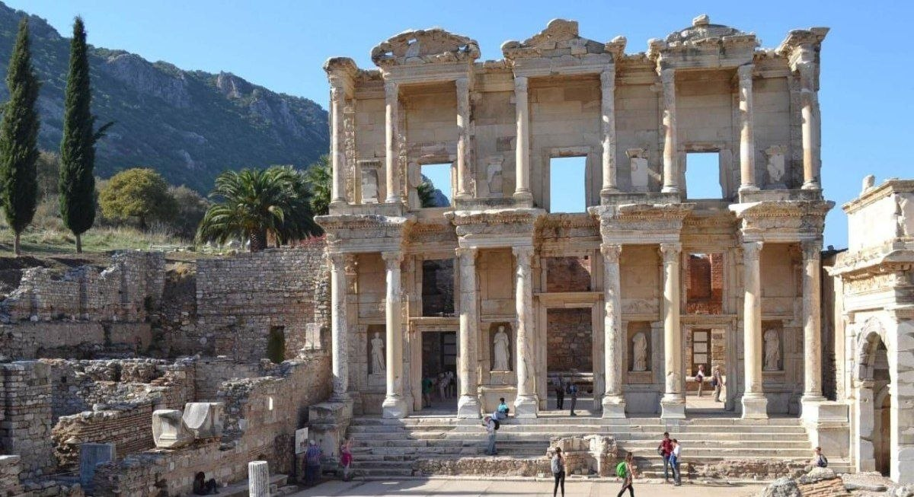

Миф, ставший историей
Троя (также известная как Илион) — это один из самых знаменитых и окутанных тайной древних городов в истории человечества. На протяжении многих столетий Троя считалась поэтическим вымыслом великого Гомера. Однако археологические раскопки XIX века доказали реальное существование этой цивилизации.
Этот величественный город находился на перекрестке Европы и Азии, у самого входа в стратегический пролив Дарданеллы на северо-западе современной Турции. Именно здесь на рубеже XIII и XII веков до нашей эры развернулась легендарная Троянская война, ставшая центральным сюжетом эллинского эпоса и символом гибели целой эпохи Бронзового века.
Основание и рождение Илиона
История возникновения Трои тесно переплетена как с фундаментальными археологическими открытиями, так и с чарующими античными мифами.
Согласно мифологии, город был основан героем Илом, сыном царя Троса. Предание гласит, что Ил одержал блистательную победу на состязаниях во Фригии и получил в награду пятьдесят юношей, пятьдесят дев, а также пеструю корову с предсказанием оракула заложить цитадель там, где животное приляжет отдохнуть. Корова остановилась на священном холме богини Аты. Именно там Ил воздвиг город, назвав его Илионом, а окрестные земли в честь своего отца стали именовать Троей.
С исторической точки зрения основание первого укрепленного поселения датируется примерно 3000 годом до нашей эры (эпоха ранней бронзы). Уникальное положение на холме Гиссарлык сделало это место ключевым военным и торговым форпостом региона на три с лишним тысячелетия.